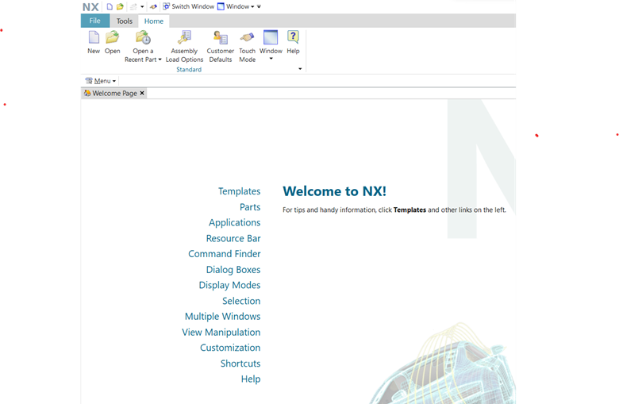
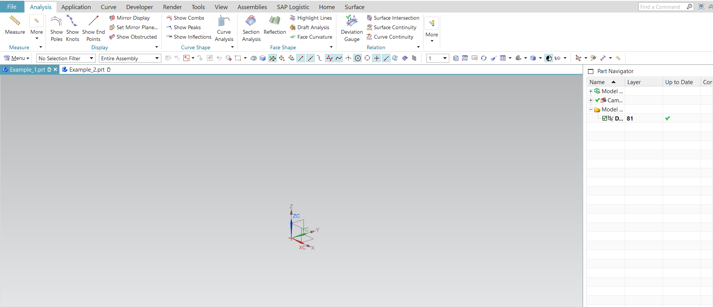

Session and Parts
Session: Nxopen.Session
In the context of Siemens NX, the term "NXOpen session" refers to the programming interface that allows users to
automate and customize Siemens NX software.
NXOpen is a collection of APIs (Application Programming Interfaces) that provide access to various functions and
capabilities within Siemens NX.
The NXOpen APIs allow developers to create custom applications, scripts, and macros to automate tasks, manipulate
designs, extract information, and perform a wide range of functions within Siemens NX.
It's a powerful tool for users looking to streamline workflows, enhance productivity, and tailor the software to
specific needs.

In the context of Siemens NX, a "session" refers to an instance of the NX software where a user interacts with the
graphical user interface (GUI) and performs various tasks, such as creating or editing parts, assemblies, drawings,
simulations, and more. It's the environment where users work on designs, models, and various engineering tasks using the
Siemens NX software.
The session in NX is essentially the active working environment that allows users to:
1. Create and modify parts and assemblies.
2. Generate drawings and documentation.
3. Perform simulations and analyses.
4. Access various tools and functionalities provided by NX.
During a session, users can perform tasks using the graphical interface or through automation using programming
languages like NXOpen (an API for customizing NX). The session keeps track of the user's actions, maintains the state of
the open files, and allows the user to work on multiple aspects of a design, such as 3D modeling, assembly, drafting,
simulation, and more.
Sessions in NX can involve opening, creating, and editing various types of files, including part files, assembly files,
drawing files, simulation files, and other types supported by the software. The session manages the interactions between
these different file types and provides a unified environment for users to work on their projects efficiently.
Parts: Nxopen.Part
A part in NX Open is a fundamental entity that represents a specific piece or component within a larger assembly or
design. Each part contains its own geometry, features, parameters, and properties, and it serves as a building block in
the construction of assemblies.
NX Open provides a robust set of APIs (Application Programming Interfaces) that enable developers to manipulate and work
with parts programmatically. These APIs allow users to perform a wide range of actions on parts, such as:
1. Creation and Modification: Users can create new parts, modify existing ones, manipulate their geometry, apply
features, and set parameters through programming.
2. Feature Manipulation: Parts in NX Open can contain features such as holes, fillets, chamfers, pockets, and more. With
NX Open, users can access and modify these features.
3. Geometry and Attributes: NX Open allows for the extraction and manipulation of part geometry, dimensions, and other
attributes.
4. Assembly Interactions: Parts are often used within assemblies. NX Open permits interaction between parts within an
assembly, allowing for positioning, constraints, and relationships between components.
5. Automation and Customization: The NX Open API enables automation and customization of various aspects of parts,
allowing users to streamline workflows, create specialized tools, and perform specific tasks automatically.
In summary, within NX Open, a "part" is a key element that users can create, modify, and manipulate programmatically to
design, engineer, and assemble complex models and products using Siemens NX software.
